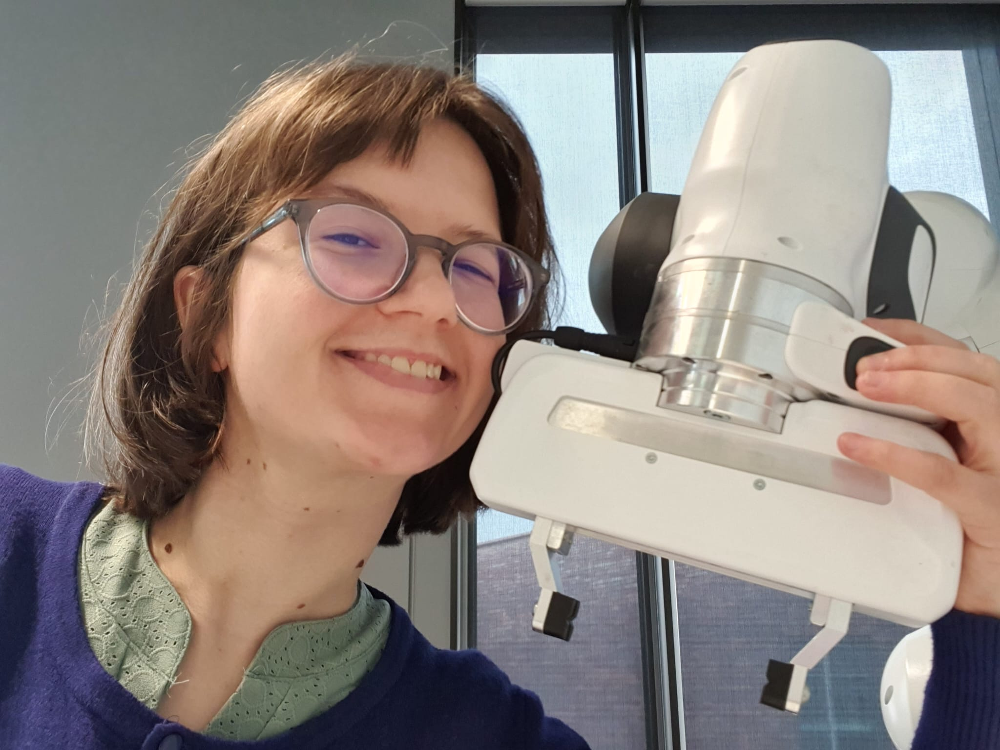

May 2026
Paper accepted to PPSN 2026
My collaboration with the other ARIEL devs on challenging the status quo of experiment control in evolutionary computation has been accepted to PPSN 2026.

Welcome! Being a curious individual, I work as a scientific programmer and lab manager for the Computational Intelligence Group and Social AI Group at the VU Amsterdam. This gives me the opportunity to flex my problem solving muscles in a variety of robotics subdomains by supporting research, education and the general running of two labs.
As such and in my spare time, I have the privilege to conduct research in a variety of directions such as swarm robotics, robot learning, co-optimization of robot design and behaviour as well as evolutionary robotics. You show me the robot, I'll want to work with it.
In addition, I also conduct my own research in swarm robotics with a focus on collective navigation and response with the ultimate goal of deploying a robot swarm in a disaster situation. Swarm robotics and other multi-agent systems fascinate me because "the more, the merrier" also applies to robots and a swarm can solve problems individuals struggle with.
My collaboration with the other ARIEL devs on challenging the status quo of experiment control in evolutionary computation has been accepted to PPSN 2026.
I've been accepted to the 2026 IEEE RAS Summer School on Multi-Robot Systems.
My collaboration with Boubacar Ballo, Absera Yihunie, Hanan Salam and Eliseo Ferrante on "Knowledge Synthesis in Dynamic Human-Swarm Interactions using LLMs" has been accepted as a LBR poster which I will be presenting at ICRA 2026.
I will present two collaborations at ANTS 2026, a short paper "Escaping the Trap: Benchmarking Swarm Gradient-following in Geometrically Constrained Environments" and an Extended Abstract "Environmental Perception in a Swarm of Conversational Agents".